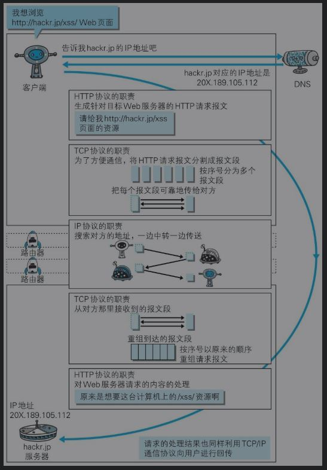

第一章 了解web及网络基础
Web使用一种名为HTTP（HyperText Transfer Protocol，超文本传输协议[插图]）的协议作为规范，完成从客户端到服务器端等一系列运作流程。
TCP/IP协议族
TCP/IP是在IP协议的通信过程中，使用到的协议族的统称。
计算机与网络设备要相互通信，双方就必须基于相同的方法。不同的硬件、操作系统之间的通信，所有的这一切都需要一种规则。而我们就把这种规则称为协议。
TCP/IP协议族分层
应用层决定了向用户提供应用服务时通信的活动。(FTP, DNS, HTTP)
传输层对上层应用层，提供处于网络连接中的两台计算机之间的数据传输。(TCP, UDP)
网络层用来处理在网络上流动的数据包,规定了通过怎样的路径（所谓的传输路线）到达对方计算机，并把数据包传送给对方。(IP)
数据链路层用来处理连接网络的硬件部分。
TCP/IP通信传输流
发送端在层与层之间传输数据时，每经过一层时必定会被打上一个该层所属的首部信息。
反之，接收端在层与层传输数据时，每经过一层时会把对应的首部消去。

IP TCP DNS
IP协议的作用是把各种数据包传送给对方。而要保证确实传送到对方那里，则需要满足IP地址和MAC地址。
IP地址指明了节点被分配到的地址，MAC地址是指网卡所属的固定地址。IP地址可以和MAC地址进行配对。IP地址可变换，但MAC地址基本上不会更改。
在网络上，通信的双方在同一局域网（LAN）内的情况是很少的，通常是经过多台计算机和网络设备中转才能连接到对方。而在进行中转时，会利用下一站中转设备的MAC地址来搜索下一个中转目标。这时，会采用ARP协议–根据通信方的IP地址就可以反查出对应的MAC地址。
TCP位于传输层，提供可靠的字节流服务。
字节流服务–为了方便传输，将大块数据分割成以报文段（segment）为单位的数据包进行管理。
可靠–为了准确无误地将数据送达目标处，TCP协议采用了三次握手（three-way handshaking）策略。(ACK&SYN)
若在握手过程中某个阶段莫名中断，TCP协议会再次以相同的顺序发送相同的数据包。
DNS提供域名到IP地址之间的解析服务，属于应用层。

URI URL
URI 统一资源标识符, 是由某个协议方案表示的资源的定位标识符。
URI用字符串标识某一互联网资源，而URL表示资源的地点（互联网上所处的位置）。可见URL是URI的子集。

登录信息（认证）可选。
服务器地址必须，可以是类似hackr.jp这种DNS可解析的名称，或是192.168.1.1这类IPv4地址名，还可以是[0:0:0:0:0:0:0:1]这样用方括号括起来的IPv6地址名。
服务器端口号可选。
带层次的文件路径、查询字符串、片段标识符可选。
第二章 最简单的HTTP协议
用于客户端和服务器端之间的通信
请求访问文本或图像等资源的一端称为客户端，而提供资源响应的一端称为服务器端。
请求 & 响应


头部 与 主体 间会以一空行隔开。
不保存状态
HTTP协议自身不对请求和响应之间的通信状态进行保存。使用HTTP协议，每当有新的请求发送时，就会有对应的新响应产生。
+：减少服务器cpu和内存消耗；更快地处理大量事务，确保协议的可伸缩性；
-：eg:保存用户登录状态
http1.1引入cookie管理状态。
根据请求中uri定位资源

除此之外，如果不是访问特定资源而是对服务器本身发起请求，可以用一个来代替请求URI。
如：查询HTTP服务器端支持的HTTP方法种类
OPTIONS HTTP/1.1
HTTP方法
GET：获取资源
POST：传输实体主体
PUT：传输文件，在请求报文的主体中包含文件内容，然后保存到请求URI指定的位置。
HEAD：获得报文首部，用于确认URI的有效性及资源更新的日期时间等。
DELETE：删除文件，按请求URI删除指定的资源。
OPTIONS：询问支持的方法
TRACE：追踪路径，让Web服务器端将之前的请求通信环回给客户端。
发送请求时，在Max-Forwards首部字段中填入数值，每经过一个服务器端就将该数字减1，当数值刚好减到0时，就停止继续传输，最后接收到请求的服务器端则返回状态码200 OK的响应。容易引发XST（Cross-Site Tracing，跨站追踪）攻击。
CONNECT方法要求在与代理服务器通信时建立隧道，实现用隧道协议进行TCP通信。主要使用SSL（安全套接层）和TLS（传输层安全）协议把通信内容加密后经网络隧道传输。

持久连接
HTTP协议的初始版本中，每进行一次HTTP通信就要断开一次TCP连接。
HTTP/1.1和一部分的HTTP/1.0想出了持久连接（HTTP keep-alive）的方法 – 只要任意一端没有明确提出断开连接，则保持TCP连接状态。
持久连接使得多数请求以管线化（pipelining）方式发送成为可能，同时并行发送多个请求。
Cookie
Cookie会根据从服务器端发送的响应报文内的一个叫做Set-Cookie的首部字段信息，通知客户端保存Cookie。当下次客户端再往该服务器发送请求时，客户端会自动在请求报文中加入Cookie值后发送出去。服务器端发现客户端发送过来的Cookie后，会去检查究竟是从哪一个客户端发来的连接请求，然后对比服务器上的记录，最后得到之前的状态信息。
![Cookie]]](http://joyce-yunjiaoguo.github.io/blog/2020/02/03/http/cookie.jpg)